00:00:00
大家好，今天我們講北京保衛戰。上期節目我們講了土木堡之變。土木堡之變，明朝的皇帝朱祁鎮被抓走了，上百名隨征的文武重臣犧牲了，朝廷的幾十萬精銳大軍也損失殆盡。明朝處於建國以來最危險的時刻。瓦刺的首領也先沒想到居然能夠抓住到明朝的皇帝，這下有皇帝在手，奇貨可居，明朝的核心軍隊又被擊垮了，他就押著被俘虜的皇帝，帶著士氣高漲的瓦刺軍來進犯北京城。在這種瓦刺軍處於極大的優勢、明軍處於極度的劣勢的情況下，明軍居然守住了北京。這場北京保衛戰被稱為是明朝的續命之戰，要是沒有這場勝利，要是沒有能守住北京，明朝很可能就此滅亡了，或者變成第二個「南宋」。
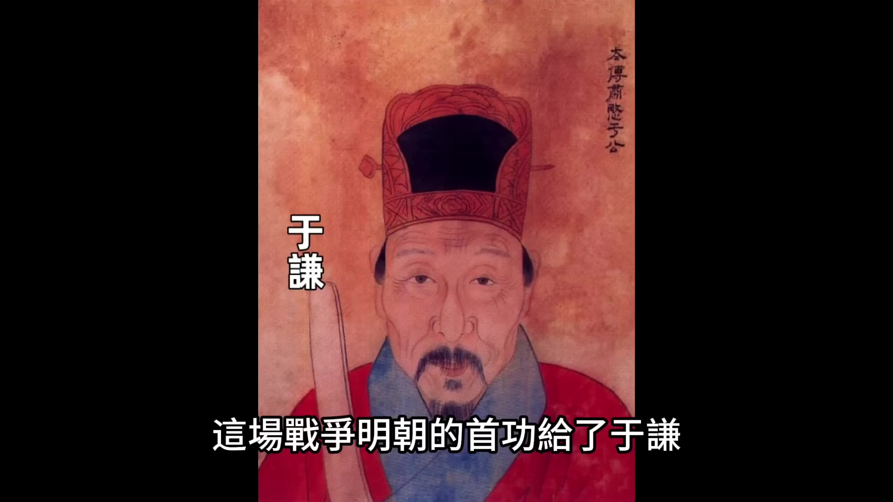
這場戰爭明朝的首功給了于謙，于謙也被『封神』，後世對他的評價全方位的都是贊譽，說他是「挽狂瀾於既倒，扶大廈之將傾」。這場北京保衛戰明朝是怎麼打的？于謙到底有沒有那麼大功績？今天我們就來聊聊這場北京保衛戰。
土木堡慘敗之後，消息傳回北京，北京朝堂上的大臣們痛哭流涕，哀聲一片。他們哭的不僅是皇帝被俘虜了，還有死了那麼多的文武大臣，這些人很多都是自己的至親好友。哭完之後悲哀轉為憤怒，大家開始追究戰敗的責任，最大的責任人是誰？
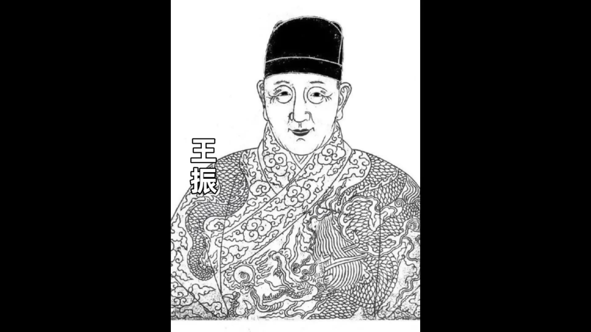
文官集團直接把矛頭指向王振，是王振慫恿皇帝御駕親征才造成這麼大悲劇。再加上王振平時頤指氣使，陷害忠良，所有大臣都跪在地上請求成王朱祁鈺追加王振的罪名，並且把王振抄家。
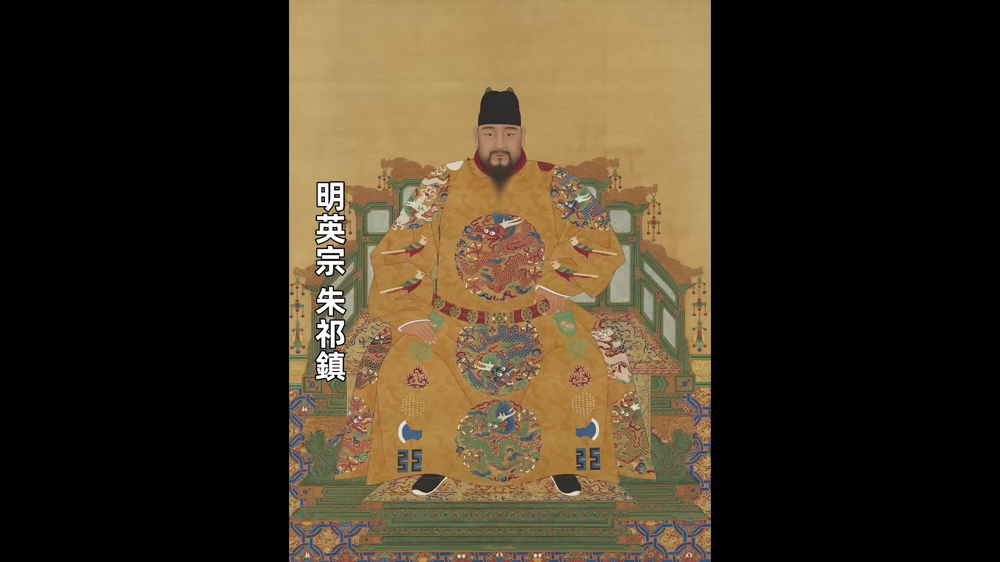
英宗朱祁鎮在御駕親征之前任命他的弟弟朱祁鈺暫時代理朝政。現在英宗被俘虜，皇太后孫氏任命朱祁鈺「紅代總國政」，也就是說讓朱祁鈺監國。朱祁鈺當年21歲，非常年輕，他監國的第一天就碰上這麼大的事需要他做主，他有點猶豫不決。朱祁鈺猶豫不決還沒說話，馬順先說話了，馬順是錦衣衛指揮使，他是王振的死黨，至振平時陷害一些大臣都是馬順一手操辦的。馬順依仗著王振的余威想要把他們壓下去。馬順不說話還好，他一說話立刻就把群臣的憤怒都引到自己身上。
個發難個好友叫劉球，劉球之前因為給皇帝上奏建議限制宦官的權力得罪了王振，被王振給陷害。被王振陷害之後，馬順作為錦衣衛的指揮使在王振的授意下對劉球嚴刑拷打，最後把劉球殺害。
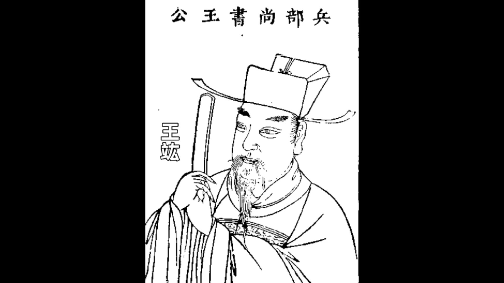
破回汰扁他做的壞事，在王竑的帶領之下，朝堂上的官員一哄而上，爭先恐後的圍攻馬順。這些平時最講禮數的文武官員居然把馬順直接給毆打死了。把馬順打死之後，群臣還不解氣，他們繼續向郕王朱祁鈺施壓，要求處死王振的黨羽。
朱祁鈺在壓力之下吩咐把毛貴和王長隨推出來，他倆出來之後也被群臣毆打致死。文武百官在朝堂上聚眾群毆，打死了一個錦衣衛和兩個太監，這在歷史上也是頭一遭，「午門血案」這個事件後來被稱為群毆。結束之後事情還沒完，有的書裡面說當時朝堂上亂作一團，郕王朱祁鈺看著三個人就這麼在自己面前被打死了，有點恐懼，想趁亂先走。大臣們都沒發現朱祁鈺要走。
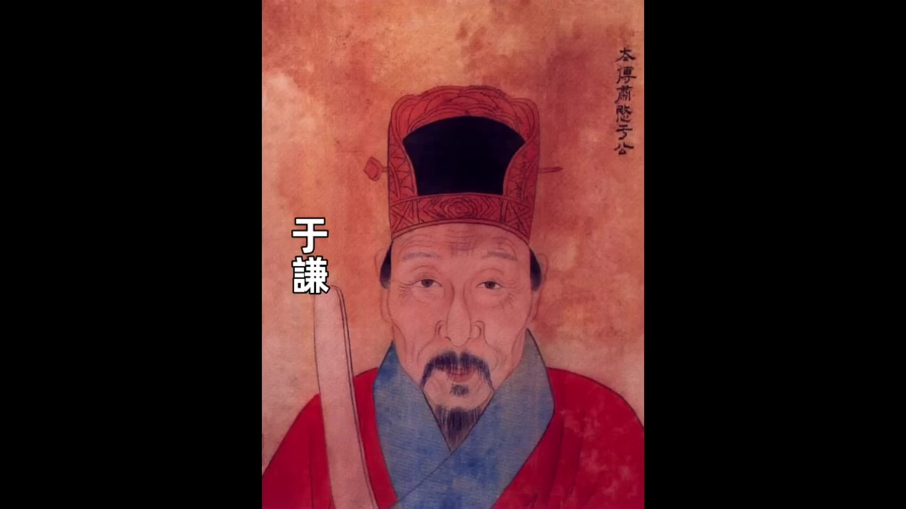
只有于謙特別冷靜，于謙立刻就衝過去一把抓住朱祁鈺說：「你不能走，你要宣佈群臣打死三個奸賊是合法的，群臣無罪。馬順是錦衣衛同知，毛貴和王長隨是負責東廠的太監，他們雖然是引起了公憤，但是既沒有審判又沒有定罪，大臣們只憑一時的激憤就把他們給打死了，這是要負責任的。而且錦衣衛和東廠都不是好惹的，郕王在朝堂上他們不敢動，郕王走了，他們要是報復起來這些官員恐怕要遭殃。」于謙一把抓住郕王不讓他走，讓他當場宣佈三個被打死的人有罪，參與群毆打人的大臣無罪。
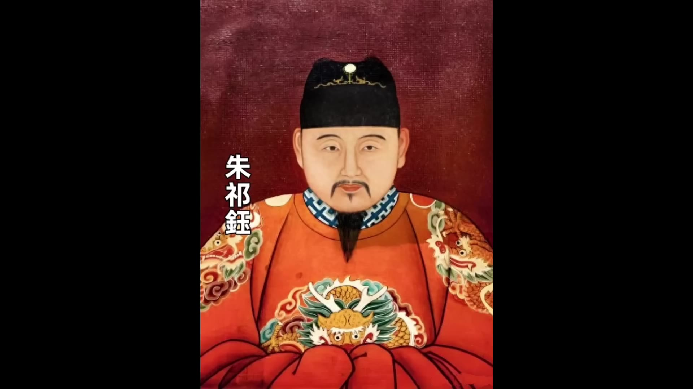
朱祁鈺被抓住之後只能同意下旨給這些玉振的余黨定罪。
這段的敘述很精彩，主要是體現了于謙的冷靜和魄力。但是我們去找這段史料的出處，發現最原始的出處是于謙的兒子于冕寫的，于謙的兒子寫自己的父親難免會誇大和贊美自己父親的功績，而後續所有的書籍都是根據《先肅愍公行狀》演繹的。但是我們去看當時最原始的第一手資料。
00:05:00
《否泰錄》包括于謙和王直的傳記裡面都沒有提到過這段，所以這段演繹的成分比較大。包括後續我們要講的北京保衛戰的一些內容，很多人採用的都是于謙的兒子寫的《先肅愍公行狀》，對于謙的功績都有誇大和美化的成分。我們不否認于謙在北京保衛戰裡面起了很關鍵的作用，但是也不能說這場保衛戰的成功是他一個人的功績，應該說這場保衛戰的成功是在朱祁鈺的帶領下，朝堂上的一眾大臣群策群力的結果。
我們再回來說朝堂群毆的後續，《明英宗實錄》裡面的記載。根據《實錄》裡面雖然沒記錄于謙當時拉住了郕王不讓他走，但是明確寫了事情過去之後，于謙率領一眾官員呈上奏章。奏章裡面指出了馬順、毛貴和王長隨是王振的同黨，請求郕王處分。奏章裡面也說了說文武群臣當時是忠義奮發，不暇顧忌殺死了奸臣，請求郕王寛恕。最終成王朱祁鈺接受了于謙等官員的說法，給這個事件就這麼定性了。
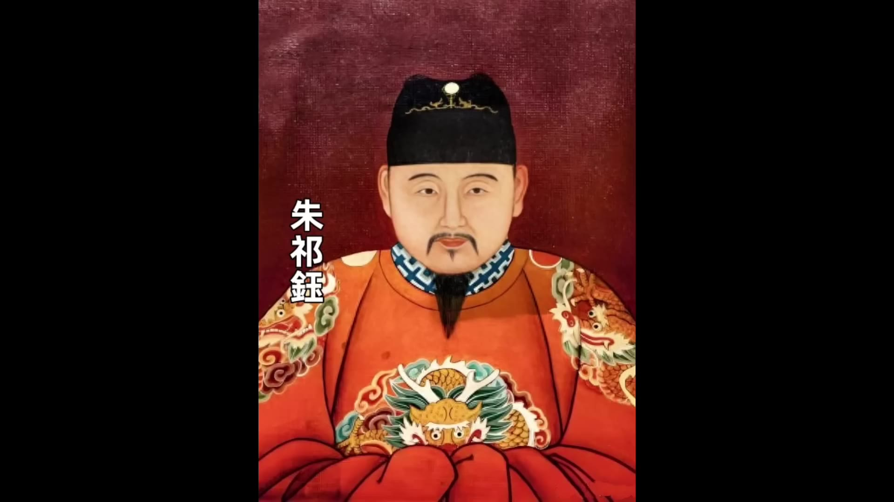
土木堡戰敗之後，北京面臨巨大的危險。朝堂上討論的第一個話題就是要不要南遷，當時的情況跟北宋的靖康元年就非常相像。靖康元年金兵包圍北宋的都城，俘虜了徽欽二宗，宋朝的政權南遷，南遷之後雖然只剩了半壁江山，但是南宋政權又延續了100多年。明朝現在皇帝被俘虜，軍隊的主力損失殆盡，比北宋當年的情況還要慘。土木堡大敗的消息傳回來之後，北京城裡面風聲鶴唳，有的官員已經準備好逃跑了。比如說當時有一個右都御史俞士悅，他就利用自己的職權把自己的妻子送回老家。俞士悅這麼幹之後，北京消息靈通的人士紛紛效仿，很多人都準備逃跑。所以要不要南遷，這是所有大臣心裡面都在想的問題。南遷還有一個很方便的地方，朱棣遷都北京之後所有的行政班子在南京都有一套，所以南遷之後政府可以很快的直接開始運轉。
但是在朝堂上大臣們不能隨便建議南遷，因為南遷屬於是投降派。作為臣子在國家危難的時候應該做的事情是為國盡忠死而後已，這是士大夫的精神。所以在這種時候主戰派永遠都是被人稱頌的，因為主戰派顯得不怕死，更有士的精神；投降派就顯得貪生怕死，會被人鄙視。所以雖然很多大臣心裡面都在想，但是誰都沒說出來。
第一個提出南遷建議的是徐珵，徐珵的官職是翰林院編修，這個人平時對天象很有研究，他說他觀察天象天命已去無能為力，唯有南遷遷都南京。他說完之後朝堂上就有很多大臣附和同意。
但是于謙大喝一聲說：「言南遷者可斬也。」就是說徐珵提出建議南遷的建議之後，朝堂上有一些大臣附和同意，于謙突然大喊一聲說，敢說南遷的人可以推出去殺了。這是很多書裡面寫的情節裡面，但是實際在《明英宗實錄》于謙不是第一個提出反對南遷的人。
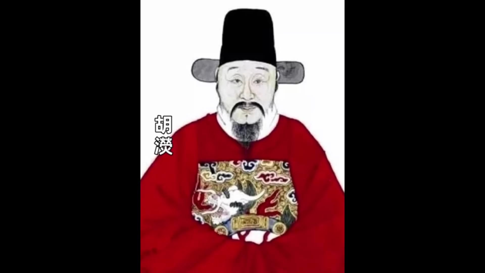
胡濙說的是：「文皇定陵寢於此，示子孫以不拔之計。」文皇指的是永樂皇帝，他說永樂皇帝把皇陵選在北京就是為了告訴子孫後代定都北京是不可動搖的長遠大計。胡濙說話非常有分量，他說完之後于謙緊隨其後第二個發言，于謙說的是：
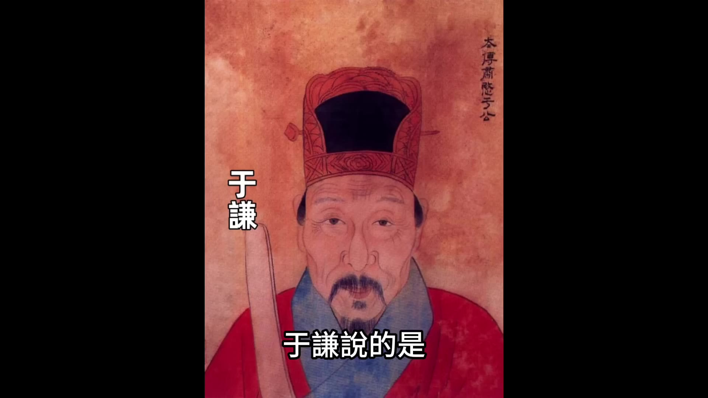
于謙表達的態度更為強硬，他第一句話說的就是想要南遷的人可以拖出去斬了。他說現在唯一的辦法就是召集天下的軍隊來勤王死守北京。胡濙和于謙發言之後，……
00:10:00
群臣響應南遷的提議就徹底被否決了接下來的事情就是做北京保衛戰的戰前準備
戰前準備要解決三個難題第一個難題是北京沒兵第二個難題是糧草問題第三個難題是英宗被俘虜也先肯定會用英宗來要挾這個怎麼辦這三個難題我們一個一個來說先說北京沒兵的問題這次英宗御駕親征把明朝在北京和北京周圍的精銳部隊都給帶走了所以保衛北京必須得從全國各地調兵讓全國各地的軍隊都來北京勤王當時被徵調來的主要有三類兵員第一類是河南和南北直隸的備操軍
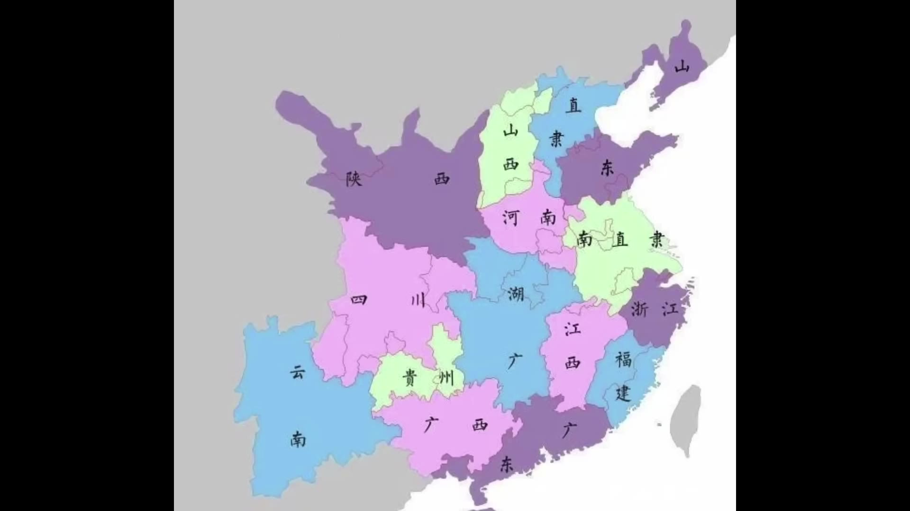
明朝時期北直隸是以北京為中心包括天津、河北和河南山東的一小部分地區南直隸是以南京為中心包括江蘇，安徽和江西的一部分地區南北直隸和河南地區的備操軍就是這些地方的預備兵預備兵就相當於是我們現在說的預備役只能從這些地方調預備兵從這也能看出來土木堡之變明軍的損失有多大正規軍都打光了只能調預備兵第二類兵員是山東和南直隸沿海的備倭軍明朝沿海一直都有倭亂所以沿海有備倭軍但是在明朝前期的時候倭亂還不嚴重所以備倭軍並不多備倭軍只調來了4,500人第三類兵員是北直隸和江北的運糧軍運糧軍就是平時在京杭大運河上負責漕運的兵這些兵其實也算不上是正規軍按照現在的說法呀他們也就算個後勤部隊這些後勤部隊到北京之後由於之前沒怎麼接受過正規訓練都是臨時緊急操練除了徵調來的這三類兵源之後還有京營殘部和逃回來的散兵京營殘部就是當時北京最精銳的部隊都跟英宗出征了還剩下一些京營的兵他們留在北京守備逃回來的散兵就是在土木堡戰敗之後不是所有的兵都死了這些被衝散的兵有的逃回北京了這些兵又被重新收集起來也是一股力量所有的這些兵員七拼八湊在北京保衛戰開始之前居然也湊出來了一支22萬人的軍隊當然還有其他來勤王的兵還在路上還沒有趕到山西的兵還有在福建、浙江正在平定叛亂的兵
這些兵都在勤王的路上這些後續正在往北京走的兵力給瓦刺軍造成了很大壓力這是兵員問題第二個是糧草問題北京作為京城平時有囤積一些糧草北京城內的糧草肯定是不夠吃的所以解決糧草問題也是重中之重這個問題倒是不難解決因為離北京不遠的北京城外的通州有大糧倉當時通過京杭大運河從南方調運過來的糧食通州是運河的終點站在通州糧倉裡面有大量糧食現在要解決的不是糧食不夠的問題很雞在短時間內運進北京要是不能及時的運進北京放在通州糧倉的餘糧就會資助敵軍當時就有人建議說為了防止餘糧落入到瓦刺軍的手中應該把餘糧都給放火燒了于謙堅決反對于謙說通州的糧食是官兵活命的本錢一定要運進北京城朝廷最終用了兩種方法激勵全民運糧個是預發北京城所有官員和士兵半年的俸糧但要求就是官員和士兵必須自己去通州倉庫自行把糧食運進北京城第二個是動員百姓在北京和北京周邊的所有百姓凡是有大車能從通州運送20石糧食到北京城內的每輛車都賞給一兩銀子這樣就全民搶運終於在敵軍到來之前把通州糧倉的糧食都咸功的運進北京城這是第二個問題糧食問題第三個問題是皇帝被俘虜的問題英宗被瓦刺俘虜瓦剌兵臨城下的時候明軍這仗還怎麼打要是瓦刺以皇帝的名義逼迫你開城門你開還是不開現在既然沒有辦法把英宗給救回來
那唯一的辦法就是換皇帝于謙聯合文武百官一起向皇太后請願請求改立皇帝立郕王朱祁鈺為新皇帝皇太后孫氏同意百官的請求下令擇日舉行登基儀式
皇太后同意之後沒想到郕王朱祁鈺居然反對朱祁鈺再三推辭堅決不肯當皇帝其實朱祁鈺不想當皇帝也很好理解他要是當了這個皇帝可以說是臨危上陣很可能重蹈北宋徽欽二宗的覆轍當時宋徽宗就是在城破之前緊急傳位給欽宗結果兩個皇帝都被敵軍給抓走了現在北京城要是被打下來他也很可能變成明朝第二個被抓的皇帝
00:15:03
還有明朝要是就此滅亡了他就是亡國之君這不就是替死鬼嘛所以朱祁鈺再三推辭說什麼都不肯當皇帝
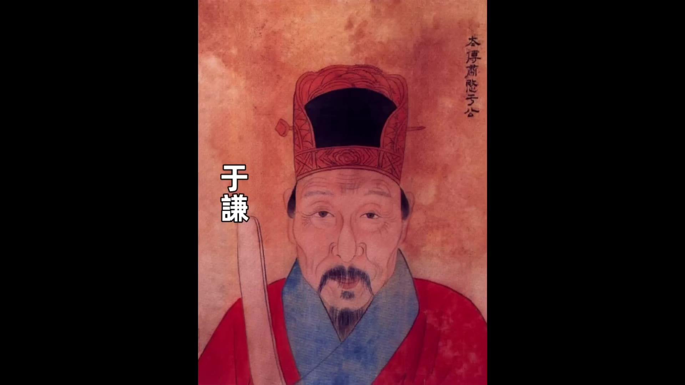
這時候于謙挺身而出他說臣等憂心國家沒有任何私心希望殿下也可以跟我們共濟艱難共同保衛大明的社稷于謙這麼說呀朱祁鈺就很難再推辭了這些大臣都是為了江山社稷為了國家大義他作為皇室的後代肯定也不能退縮最終朱祁鈺接受了皇位
朱祁鈺登基之後國號改為景泰朱祁鈺就是景帝英宗被封為太上皇這樣最大的問題就解決了還有在土木堡失敗的時候朝廷上百名文武重臣都犧牲了
大部分都得到了升遷
比如說于謙于謙本來是兵部侍郎原來的兵部尚書是鄺埜鄺埜死了于謙就升到了兵部尚書再比如說陳循陳循本來是翰林院學士土木堡之變之後他被任命為戶部尚書這樣朝廷就快速的重新組建了一套新的中樞系統新中樞系統的核心官員有幾個人
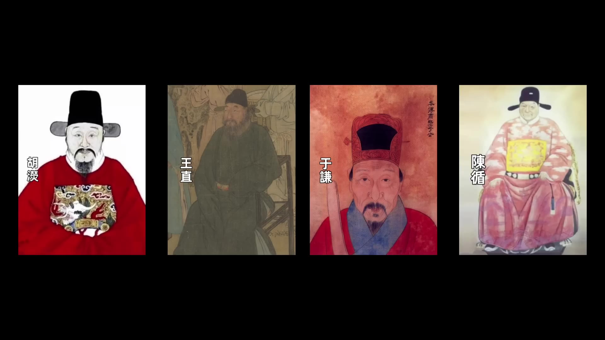
有禮部的尚書胡濙吏部尚書王直兵部尚書于謙戶部尚書陳循等人胡濙和王直的資歷雖然比于謙要老但是這場北京保衛戰于謙臨危受命他擔任了最高的總統帥實際上在新皇帝朱祁鈺的領導下朝廷上最高的總統帥是兩個人一個是于謙于謙是文臣石亨是武將當時明朝的軍事體制是文臣總督武將總兵就是于謙負責運籌帷幄發號施令石亨負責具體作戰但是在戰前準備的時候確實是于謙發揮了統帥全局的作用于謙作為最高統帥他率領群臣一起徵集軍隊徵調糧草修補城牆討論戰術等等在瓦剌大軍到來之前明軍爭分奪秒已經做好了堅守的準備
從土木堡之戰結束到瓦剌大軍攻到北京城下期間一共間隔了56天時間就是這56天給了明朝喘息的機會讓明朝做了一系列的防禦部署在土木堡之戰結束之後瓦剌軍幹什麼去了也先為什麼沒有立刻進攻北京
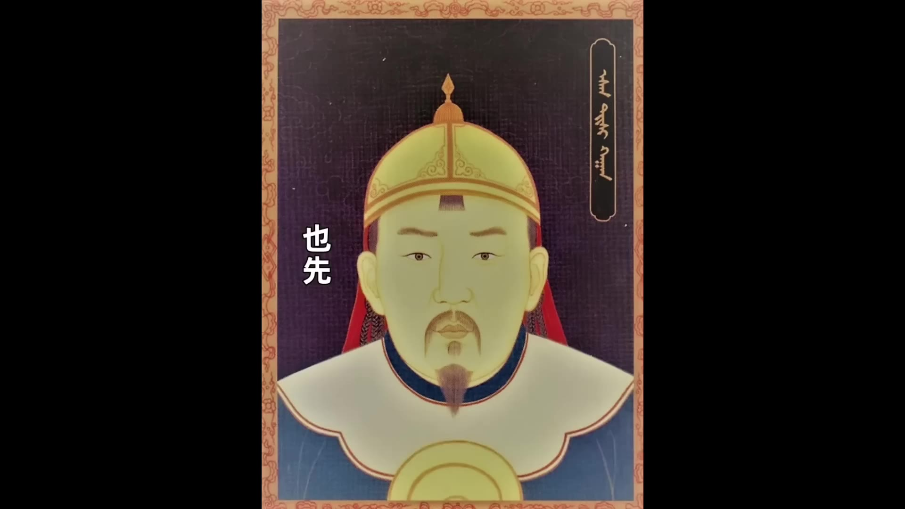
這是也先的戰略失誤在土木堡大勝之後也先產生了輕敵的心理而且他認為俘虜了英宗是奇貨可居他浪費了大量時間在大同宣府等邊關城下敲詐勒索也先俘虜了英宗之後他想以英宗為誘餌對明朝的邊關進行勒索最好能夠兵不血刃就能撬開明朝的邊關大門土木堡之戰是8月15號結束8月17號瓦剌軍押著英宗來到宣府城
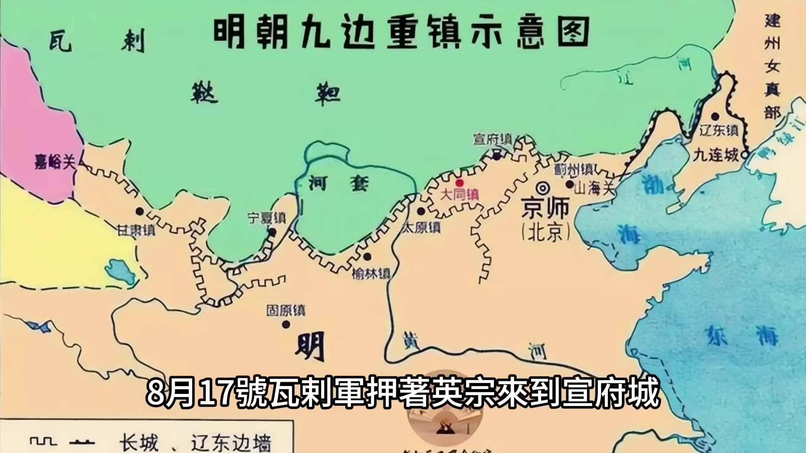
對城上的守軍說說他們有英宗的聖旨命令楊洪等人開城門迎接皇帝進城當時宣府的主將是楊洪、羅享信等人他們看到瓦剌大軍壓境而且還帶著英宗如果打開城門瓦剌軍肯定就會一擁而入這肯定不行但是如果不打開城門這實在是不好應對最後楊洪想了個辦法今天天色已晚我不敢擅自開城門我們守的是皇帝的城池楊洪也不在城裡這句話回答的其實很有講究首先按照城禁制度當天天色已晚不應該開城門第二天色已晚看不清無法確認英宗有沒有在城下既然無法確認你聖旨的真假我們就無法分辨第三說楊洪不在城內楊洪是主將主將不在我們就沒有權限給你開城門這個回答一出來也先也沒辦法他看宣府的守軍不好對付他就向西去大同試試
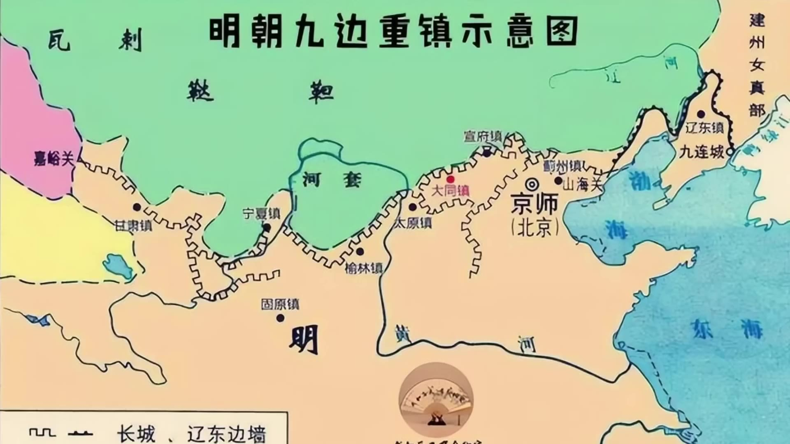
8月21號瓦剌大軍帶著英宗出現在大同城下還是同樣的套路他們傳聖旨讓大同的守軍開城門
第一次大同的守軍直接拒絕第二次英宗讓袁彬騎馬到城下交涉袁彬是英宗的貼身侍衛英宗被俘虜之後他一直跟在英宗身邊他還寫了一本《北征事跡》《北征事跡》記錄的就是英宗在被俘虜期間的親歷記錄這本《北征事跡》是第一手資料非常珍貴我們講的內容有一些就是從這本書裡面來的袁彬來交涉明軍不能置之不理大同的主將是郭登和劉安郭澄也沒像宣府的楊洪那樣裝作不在城裡面他放袁彬進城袁彬進城之後跟城內的郭登等人說說也先索要的主要是錢財也先承諾過只要給錢你們就可以打開城門把英宗給你們還回去郭登當然不信他拒絕開城門也拒絕給錢袁彬無功而返之後英宗很著急英宗應該是相信了也先的話
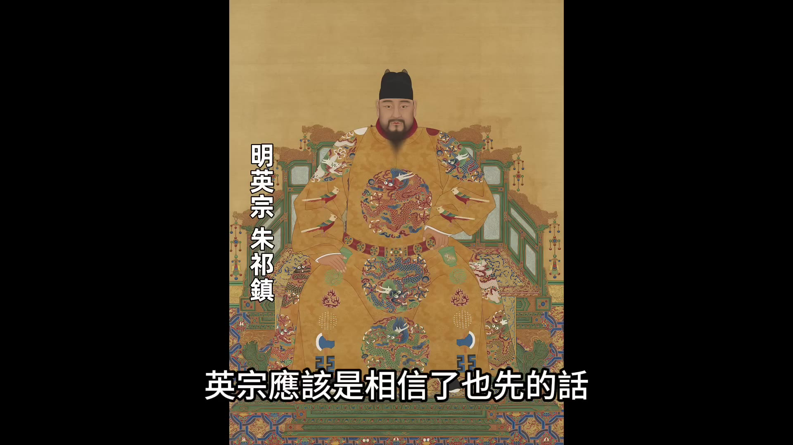
認為只要給錢就可以把自己放回去他讓袁彬再去讓他問郭登說我跟你是姻親關係咱們這麼親近
00:20:02
郭登的回答是我奉命守城不知其他。英宗說他和郭登是姻親關係，是想通過私交來打動郭登。郭登的回答卻說他是奉命守城，奉命守城是國家大義，他用國家大義來回復。英宗的私交可以說回答得完全挑不出毛病來。但是守城的其他將領卻說應該試一試，瓦刺軍就能把皇帝給放回來呢。最後的結果是他們給了袁彬一批財物，用來贖回英宗，結果是也先收了財物仍然不放英宗。郭登的判斷是正確的。也先勒索錢財成功之後，他就率領瓦刺軍暫時退到了八寶山駐紮，他沒有立刻攻城，畢竟他手裡面還有英宗這個奇貨，他是想靠著英宗這個籌碼再次勒索，甚至騙開城門。9月21號，也先率領瓦刺大軍再次來到大同城下，再次聲稱要放回英宗，讓城內開門。積極備戰，再也不相信也先的鬼話了。也先看到大同守備嚴密，也不想硬攻。這時候投降過去的喜寧給也先出主意。喜寧是英宗身邊的太監，英宗被俘虜的時候他也一起被俘虜，他就叛變了。喜寧對明朝內部的結構非常瞭解，有他引路給也先帶來了很大好處。也先帶著英宗到處勒索，就是喜寧給他出的主意。喜寧看大同和宣府都不肯開城門，他就跟也先說說北京兵力空虚，你不要管大同和宣府了，這兩個城池不好打，你從紫荊關走，紫荊關防守空虚，過了紫荊關之後可以直接到北京。
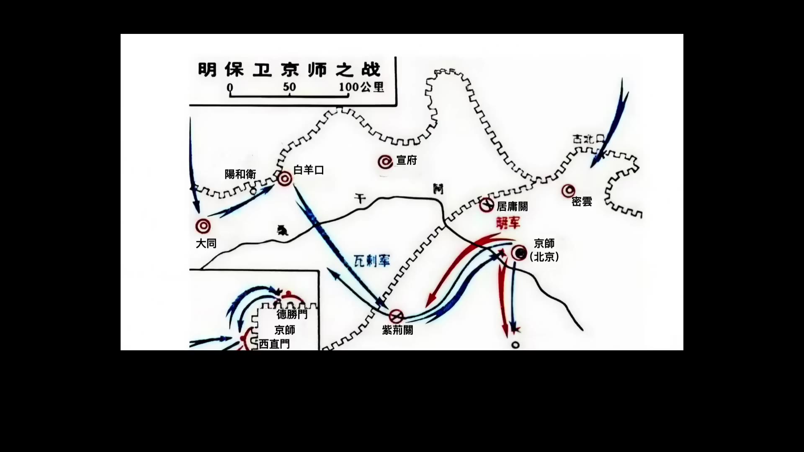
也先聽了喜寧的建議從紫荊關走，果然紫荊關的防守沒有大同那麼嚴。但是他也打了四天，打了四天打過紫荊關之後直奔北京，10月11號瓦刺大軍到達北京近郊，開始跟京城的守軍對峙。瓦刺軍本來是佔盡優勢，但是由於也先的戰略失誤就導致錯失了進攻北京的最佳良機，而且他俘虜的英宗也不是奇貨可居了，北京朝廷另立新君，他再拿手裡的英宗跟明軍談判，明軍就也不理他了。也先率領大軍來到北京城下之後，他發現明軍居然不是在城內憑城固守，而是在城外主動迎戰。明軍主動迎戰這麼打是于謙制定的戰術。按照石亨的建議應該是憑城固守，就是關閉所有的城門，依靠北京城堅固的城牆來消耗瓦刺的軍隊，但是于謙反對。于謙認為瓦刺軍是攜著土木堡大勝的余威而來，本來氣勢就很盛，我們要是再躲在城裡面龜縮不出，瓦刺的氣勢就更盛了，這樣他們會放開手腳肆無忌憚的攻城。
所以于謙主張主動出擊，在城外布陣，把22萬大軍分派到北京城的九個城門外列陣迎敵。而且于謙採取了非常激進的非常殘酷的斷絕後路的政策，他下令所有官兵出城列陣之後城門鎖死，誰都不准入城。這樣一來明軍的士兵就沒有退路，只能拼死一戰。于謙的這個戰術是置之死地而後生，讓所有的軍官和士兵都跟北京城共存亡。于謙他自己也以身作則，把自己也鎖在北京城外坐鎮在德勝門外指揮。
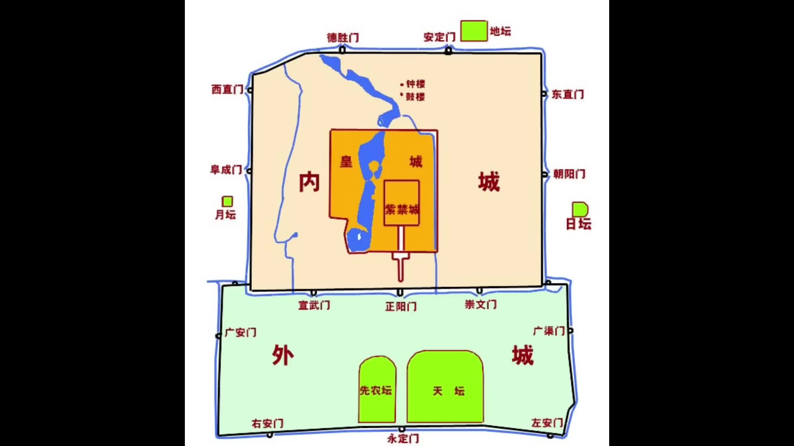
當時北京有九個城門，每個城門外都分配了2萬到3萬的守軍，每個城門外都有主將統兵，比如都督陶瑾守安定門，廣寧伯劉安守東直門，武進伯朱瑛守朝陽門，都督孫鏜守西直門等等。于謙認為瓦刺軍最有可能進攻的是德勝門，他自己和石亨親自領兵鎮守在德勝門外。10月13號戰鬥正式打響，瓦刺軍的一萬多名騎兵猛攻德勝門，沒想到還沒走到德勝門就遭到了明軍的埋伏。德勝門外有大量的民房，當時北京城外有很多的老百姓居住，于謙把這些老百姓都搬遷到了北京城內，然後在民房裡面設置了伏軍。這批埋伏在民房裡面的軍隊並不是普通的軍隊，而是神機營。明朝原來的神機營大部分都被英宗給帶走了，並且在土木堡陣亡了，但是京城裡面還留了小部分神機營留守兵力。于謙就以這一小部分留守兵力為基礎，緊急補充了大量的兵力，重新編組訓練。還好神機營的火器充足，新訓練的神機營就被安排埋伏在這些民房裡面等待時機。戰鬥打響之後，石亨派出少量的騎兵去引誘敵人，瓦剌軍果然上當，瓦剌軍追到民房區域的時候，明軍埋伏的神炮、火器齊發，瓦剌軍傷亡慘重，也先的弟弟孛羅都在戰鬥中身亡。
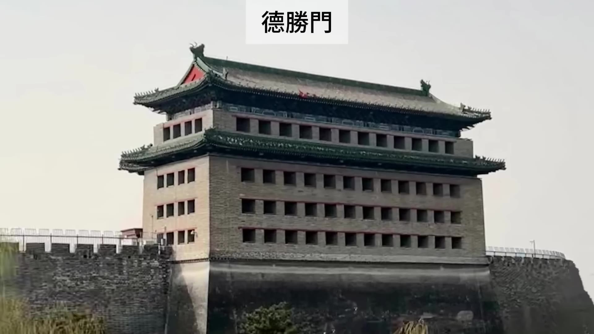
也先觀察戰場的局勢，他發現明軍是把德勝門佈置成了自己的主戰場，他就放棄德勝門。
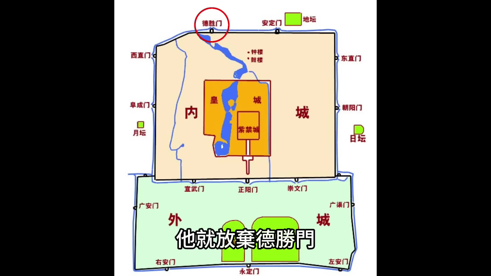
讓瓦刺的主力軍去打德勝門旁邊的西直門，明軍守西直門的主將是都督孫鏜，孫鏜率領軍隊跟瓦剌軍對戰。
00:25:01
一開始打的還行，殲滅了瓦剌軍少量的部隊，但是隨後瓦剌軍增兵，孫鏜的部隊就被瓦剌軍重重包圍，開始向後退縮。孫鏜支撐不佳的時候想要退回到城內，當時守在西直門城牆上的官員是吏科給事中程信。程信堅持遵守于謙的軍令，于謙說過關閉城門，任何人不准退回城內，所以程信拒絕閞城門。孫鏜沒辦法，只能率領手下部隊繼續跟敵軍硬拼。不過這時候他們已經是退到了城牆下，程信讓城上的明軍使用火器向卡射擊，這些火器一射擊就使得瓦剌軍陣腳大亂。與此同時，坐鎮在德勝門的主將石亨也分兵到西直門來支援。最終在孫鏜背水一戰、城牆上的炮火襲擊和友軍的支援之下，來進攻西直門的瓦剌軍被打退。這是10月13號的戰況。
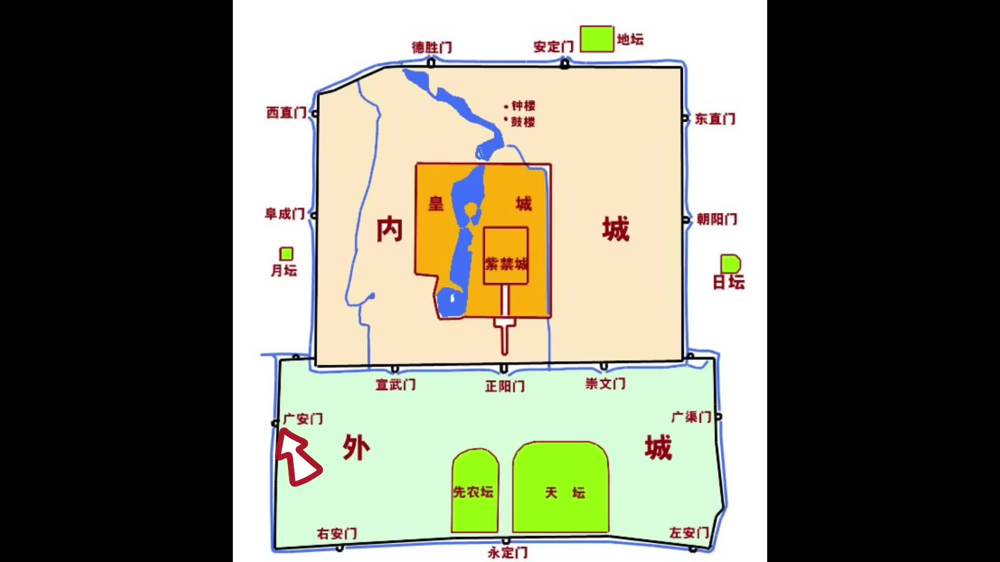
第二天14號，瓦剌軍繼續進攻，14號的主戰場轉移到了彰義門。彰義門就是後來的廣安門，北京城當時還沒有外城，外圍是一圈土城，所以彰義門並不是一個正式的城門。當時明軍的防線是分內外兩層，第一層是內城的九門，第二層是外圍的土城，一個舊的門戶彰義門就是外圍土城的。于謙在部署防禦的時候，彰義門並不是防禦的重點。在彰義門防守的主將是都督武興和王敬。武興的布陣方式是在最前方放置神機營的神銃部隊，中間放置的是弓箭手和手持短兵的官軍，最後面放置的是由數百名內官組成的騎兵部隊。內官就是太監，太監都騎馬上陣了，從這也能看出來這支部隊是臨時拼湊的。瓦剌軍衝過來之後，神銃部隊火器齊發，用猛烈的火力和射程優勢成功地擊退了瓦剌軍的先頭攻擊。就在明軍佔據上風的時候，突然發生意外，由於太監部隊是臨時拼湊的，訓練不足，他們看到敵軍退縮，居然就不顧陣型騎馬衝出來發起衝鋒。這下明軍的隊列一下就亂了，火器的優勢也發揮不出來。瓦剌軍發現機會之後，立刻發起猛烈反攻，明軍在混亂中被敵軍打得潰敗。明軍的主將武興在混戰中也戰死。瓦剌軍在擊敗武興的部隊之後，一路殺到了土城下。就在最危險的時候，王竑和毛福壽率領援軍及時趕到，這才化解了瓦剌軍的這波進攻。這是10月14號的進攻。
到10月15號，也先意識到北京的守軍非常頑強，而且他探得明軍的各路勤王大軍都在趕往北京的路上，尤其是楊洪的2萬精兵還有遼東焦禮的3萬精兵即將到達北京。也先決定撤退，10月15號當天從良鄉往西走，最終撤出紫荊關。
00:00:00
大家好今天我們講北京保衛戰上期節目我們講了土木堡之變土木堡之變明朝的皇帝朱祁鎮被抓走了上百名隨征的文武重臣犧牲了朝廷的幾十萬精銳大軍也損失殆盡明朝處於建國以來最危險的時刻瓦刺的首領也先沒想到居然能夠抓住到明朝的皇帝這下有皇帝在手奇貨可居明朝的核心軍隊又被擊垮了他就押著被俘虜的皇帝帶著士氣高漲的瓦刺軍來進犯北京城在這種瓦刺軍處於極大的優勢明軍處於極度的劣勢的情況下明軍居然守住了北京這場北京保衛戰被稱為是明朝的續命之戰要是沒有這場勝利要是沒有能守住北京明朝很可能就此滅亡了或者變成第二個「南宋」
這場戰爭明朝的首功給了于謙于謙也被『封神」後世對他的評價全方位的都是贊譽說他是輓狂瀾於既倒扶大廈之將傾這場北京保衛戰明朝是怎麼打的于謙到底有沒有那麼大功績今天我們就來聊聊這場北京保衛戰
土木堡慘敗之後消息傳回北京北京朝堂上的大臣們痛哭流涕哀聲一片他們哭的不僅是皇帝被俘虜了還有死了那麼多的文武大臣這些人很多都是自己的至親好友哭完之後悲哀轉為憤怒大家開始追究戰敗的責任最大的責任人是誰
文官集團直接把矛頭指向王振是主振慫恿皇帝御駕親征才造成這麼大悲劇再加上王振平時頤指氣使陷害忠良所有大臣都跪在地上請求成王朱祁鈺追加王振的罪名並且把王振抄家
英宗朱祁鎮在御駕親征之前任命他的弟弟朱祁鈺暫時代理朝政現在英宗被俘虜皇太后孫氏任命朱祁鈺紅代總國政」也就是說讓朱祁鈺監國朱祁鈺當年21歲非常年輕他監國的第一天就碰上這麼大的事需要他做主他有點猶豫不決朱祁鈺猶豫不決還沒說話馬順先說話了馬順是錦衣衛指揮使他是王振的死黨至振平時陷害一些大臣都是馬順一手操辦的馬順依仗著王振的余威想要把他們壓下去馬順不說話還好他一說話立刻就把群臣的憤怒都引到自己身上
個發難個好友叫劉球劉球之前因為給皇帝上奏建議限制宦官的權力得罪了王振被王振給陷害被王振陷害之後馬順作為錦衣衛的指揮使在王振的授意下對劉球嚴刑拷打最後把劉球殺害
破回汰扁他做的壞事在王竑的帶領之下朝堂上的官員一哄而上爭先恐後的圍攻馬順這些平時最講禮數的文武官員居然把馬順直接給毆打死了把馬順打死之後群臣還不解氣他們繼續向郕王朱祁鈺施壓要求處死王振的黨羽
朱祁鈺在壓力之下吩咐把毛貴和王長隨推出來他倆出來之後也被群臣毆打致死文武百官在朝堂上聚眾群毆打死了一個錦衣衛和兩個太監這在歷史上也是頭一遭「午門血案」這個事件後來被稱為群毆結束之後事情還沒完有的書裡面說當時朝堂上亂作一團郕王朱祁鈺看著三個人就這麼在自己面前被打死了有點恐懼想趁亂先走大臣們都沒發現朱祁鈺要走
只有于謙特別冷靜于謙立刻就衝過去一把抓住朱祁鈺說你不能走你要宣佈群臣打死三個奸賊是合法的群臣無罪馬順是錦衣衛同知毛貴和王長隨是負責東廠的太監他們雖然是引起了公憤但是既沒有審判又沒有定罪大臣們只憑一時的激憤就把他們給打死了這是要負責任的而且錦衣衛和東廠都不是好惹的郕王在朝堂上他們不敢動郕王走了他們要是報復起來這些官員恐怕要遭殃所以于謙一把抓住郕王不讓他走讓他當場宣佈三個被打死的人有罪參與群毆打人的大臣無罪
朱祁鈺被抓住之後只能同意下旨給這些玉振的余黨定罪
這段的敘述很精彩主要是體現了于謙的冷靜和魄力但是我們去找這段史料的出處發現最原始的出處是于謙的兒子于冕寫的于謙的兒子寫自己的父親難免會誇大和贊美自己父親的功績而後續所有的書籍都是根據《先肅愍公行狀》演繹的但是我們去看當時最原始的第一手資料
00:05:00
《否泰錄》包括于謙和王直的傳記裡面都沒有提到過這段所以這段演繹的成分比較大包括後續我們要講的北京保衛戰的一些內容很多人採用的都是于謙的的敘述兒子寫的《先肅愍公行狀》對于謙的功績都有誇大和美化的成分在我們不否認于謙在北京保衛戰裡面起了很關鍵的作用但是也不能說這場保衛戰的成功是他一個人的功績應該說這場保衛戰的成功是在朱祁鈺的帶領下朝堂上的一眾大臣群策群力的結果我們再回來說朝堂群毆的後續《明英宗實錄》裡面的記載根據《實錄》裡面雖然沒記錄于謙當時拉住了郕王不讓他走但是明確寫了事情過去之後于謙率領一眾官員呈上奏章奏章裡面指出了馬順、毛貴和王長隨是王振的同黨請求郕王處分奏章裡面也說了說文武群臣當時是忠義奮發不暇顧忌殺死了奸臣請求郕王寛恕最終成王朱祁鈺接受了于謙等官員的說法給這個事件就這麼定性了
郕玉說的是馬順等皆王振奸黨文武群臣捶死之俱忠義心朕已知之這就是「午門血案」的結局這個結局這麼定性三個同黨這麼簡單這是文官集團在朝堂上重新獲得話語權之前在朝堂上文官集團一直都是被王振的宦官集團壓制現在王振死了宦官集團的勢力隨之減弱馬順代表的是錦衣衛毛貴和王長隨代表的是東廠他們都被定性為是奸臣錦衣衛和東廠就徹底被文官集團給壓制文官集團取得了絕對的話語權之後他們才能掌控後面北京保衛戰的局勢的發展
土木堡戰敗之後北京面臨巨大的危險朝堂上討論的第一個話題就是要不要南遷當時的情況跟北宋的靖康元年就非常相像靖康元年金兵包圍北宋的都城俘虜了徽欽二宗宋朝的政權南遷南遷之後雖然只剩了半壁江叫但是南宋政權又延續了100多年明朝現在皇帝被俘虜了軍隊的主力損失殆盡比北宋當年的情況還要慘土木堡大敗的消息傳回來之後北京城裡面風聲鶴唳有的官員已經準備好逃跑了比如說當時有一個右都御史俞士悅他就利用自己的職權把自己的妻子送回老家俞士悅這麼幹之後北京消息靈通的人士紛紛效仿很多人都準備逃跑所以要不要南遷這是所有大臣心裡面都在想的問題南遷還有一個很方便的地方
朱棣遷都北京之後所有的行政班子在南京都有一套所以南遷之後政府可以很快的直接開始運轉但是在朝堂上大臣們不能隨便建議南遷因為南遷屬於是投降派作為臣子在國家危難的時候應該做的事情是為國盡忠死而後已這是士大夫的精神所以在這種時候主戰派永遠都是被人稱頌的因為主戰派顯得不怕死更有士的精神投降派就顯得貪生怕死會被人鄙視所以雖然很多大臣心裡面都在想但是誰都沒說出來第一個提出南遷建議的是徐珵徐珵的官職是翰林院編修這個人平時對天象很有研究他說他觀察天象天命已去無能為力唯有南遷遷都南京他說完之後朝堂上就有很多大臣附和同意
但是于謙大喝一聲說「言南遷者可斬也」就是說徐珵提出建議南遷的建議之後朝堂上有一些大臣附和同意于謙突然大喊一聲說敢說南遷的人可以推出去殺了這是很多書裡面寫的情節裡面但是實際在《明英宗實錄》于謙不是第一個提出反對南遷的人徐珵說完之後第一個提出反對的人是胡淡
胡濙的官職是禮部尚書胡濙是朱棣時期的老臣是四朝元老地位非常高于謙當時只是一個侍郎還沒升到尚書所以胡濙無論是在官職上還是在威望上都比于謙要更高胡濙說的是文皇定陵寢於此示子孫以不拔之計文皇指的是永樂皇帝他說永樂皇帝把皇陵選在北京就是為了告訴子孫後代定都北京是不可動搖的長遠大計胡濙說話非常有分量他說完之後于謙緊隨其後第二個發言于謙說的是
欲遷者可斬為今之計速召天下勤王兵以死守之于謙表達的態度更為強硬他第一句話說的就是想要南遷的人可以拖出去斬了
他說現在唯一的辦法就是召集天下的軍隊來勤王死守北京胡濙和于謙發言之後
00:10:00
群臣響應南遷的提議就徹底被否決了接下來的事情就是做北京保衛戰的戰前準備
戰前準備要解決三個難題第一個難題是北京沒兵第二個難題是糧草問題第三個難題是英宗被俘虜也先肯定會用英宗來要挾這個怎麼辦這三個難題我們一個一個來說先說北京沒兵的問題這次英宗御駕親征把明朝在北京和北京周圍的精銳部隊都給帶走了所以保衛北京必須得從全國各地調兵讓全國各地的軍隊都來北京勤王當時被徵調來的主要有三類兵員第一類是河南和南北直隸的備操軍
明朝時期北直隸是以北京為中心包括天津、河北和河南山東的一小部分地區南直隸是以南京為中心包括江蘇，安徽和江西的一部分地區南北直隸和河南地區的備操軍就是這些地方的預備兵預備兵就相當於是我們現在說的預備役只能從這些地方調預備兵從這也能看出來土木堡之變明軍的損失有多大正規軍都打光了只能調預備兵第二類兵員是山東和南直隸沿海的備倭軍明朝沿海一直都有倭亂所以沿海有備倭軍但是在明朝前期的時候倭亂還不嚴重所以備倭軍並不多備倭軍只調來了4,500人第三類兵員是北直隸和江北的運糧軍運糧軍就是平時在京杭大運河上負責漕運的兵這些兵其實也算不上是正規軍按照現在的說法呀他們也就算個後勤部隊這些後勤部隊到北京之後由於之前沒怎麼接受過正規訓練都是臨時緊急操練除了徵調來的這三類兵源之後還有京營殘部和逃回來的散兵京營殘部就是當時北京最精銳的部隊都跟英宗出征了還剩下一些京營的兵他們留在北京守備逃回來的散兵就是在土木堡戰敗之後不是所有的兵都死了這些被衝散的兵有的逃回北京了這些兵又被重新收集起來也是一股力量所有的這些兵員七拼八湊在北京保衛戰開始之前居然也湊出來了一支22萬人的軍隊當然還有其他來勤王的兵還在路上還沒有趕到山西的兵還有在福建、浙江正在平定叛亂的兵
這些兵都在勤王的路上這些後續正在往北京走的兵力給瓦刺軍造成了很大壓力這是兵員問題第二個是糧草問題北京作為京城平時有囤積一些糧草北京城內的糧草肯定是不夠吃的所以解決糧草問題也是重中之重這個問題倒是不難解決因為離北京不遠的北京城外的通州有大糧倉當時通過京杭大運河從南方調運過來的糧食通州是運河的終點站在通州糧倉裡面有大量糧食現在要解決的不是糧食不夠的問題很雞在短時間內運進北京要是不能及時的運進北京放在通州糧倉的餘糧就會資助敵軍當時就有人建議說為了防止餘糧落入到瓦刺軍的手中應該把餘糧都給放火燒了于謙堅決反對于謙說通州的糧食是官兵活命的本錢一定要運進北京城朝廷最終用了兩種方法激勵全民運糧個是預發北京城所有官員和士兵半年的俸糧但要求就是官員和士兵必須自己去通州倉庫自行把糧食運進北京城第二個是動員百姓在北京和北京周邊的所有百姓凡是有大車能從通州運送20石糧食到北京城內的每輛車都賞給一兩銀子這樣就全民搶運終於在敵軍到來之前把通州糧倉的糧食都咸功的運進北京城這是第二個問題糧食問題第三個問題是皇帝被俘虜的問題英宗被瓦刺俘虜瓦剌兵臨城下的時候明軍這仗還怎麼打要是瓦刺以皇帝的名義逼迫你開城門你開還是不開現在既然沒有辦法把英宗給救回來
那唯一的辦法就是換皇帝于謙聯合文武百官一起向皇太后請願請求改立皇帝立郕王朱祁鈺為新皇帝皇太后孫氏同意百官的請求下令擇日舉行登基儀式
皇太后同意之後沒想到郕王朱祁鈺居然反對朱祁鈺再三推辭堅決不肯當皇帝其實朱祁鈺不想當皇帝也很好理解他要是當了這個皇帝可以說是臨危上陣很可能重蹈北宋徽欽二宗的覆轍當時宋徽宗就是在城破之前緊急傳位給欽宗結果兩個皇帝都被敵軍給抓走了現在北京城要是被打下來他也很可能變成明朝第二個被抓的皇帝
00:15:03
還有明朝要是就此滅亡了他就是亡國之君這不就是替死鬼嘛所以朱祁鈺再三推辭說什麼都不肯當皇帝
這時候于謙挺身而出他說臣等憂心國家沒有任何私心希望殿下也可以跟我們共濟艱難共同保衛大明的社穋于謙這麼說呀朱祁鈺就很難再推辭了這些大臣都是為了江山社穋為了國家大義他作為皇室的後代肯定也不能退縮最終朱祁鈺接受了皇位
朱祁鈺登基之後國號改為景泰朱祁鈺就是景帝英宗被封為太上皇這樣最大的問題就解決了還有在土木堡失敗的時候朝廷上百名文武重臣都犧牲了
大部分都得到了升遷
比如說于謙于謙本來是兵部侍郎原來的兵部尚書是鄺埜鄺埜死了于謙就升到了兵部尚書再比如說陳循陳循本來是翰林院學士土木堡之變之後他被任命為戶部尚書這樣朝廷就快速的重新組建了一套新的中樞系統新中樞系統的核心官員有幾個人
有禮部的尚書胡淡吏部尚書王直兵部尚書于謙戶部尚書陳循等人胡濙和王直的資歷雖然比于謙要老但是這場北京保衛戰于謙臨危受命他擔任了最高的總統帥實際上在新皇帝朱祁鈺的領導下朝廷上最高的總統帥是兩個人一個是于謙于謙是文臣石亨是武將當時明朝的軍事體制是文臣總督武將總兵就是于謙負責運籌帷幄發號施令石亨負責具體作戰但是在戰前準備的時候確實是于謙發揮了統帥全局的作用于謙作為最高統帥他率領群臣一起徵集軍隊徵調糧草修補城牆討論戰術等等在瓦刺大軍到來之前明軍爭分奪秒已經做好了堅守的準備
從土木堡之戰結束到瓦刺大軍攻到北京城下期間一共間隔了56天時間就是這56天給了明朝喘息的機會讓明朝做了一系列的防禦部署在土木堡之戰結束之後瓦刺軍幹什麼去了也先為什麼沒有立刻進攻北京
這是也先的戰略失誤在土木堡大勝之後也先產生了輕敵的心理而且他認為俘虜了英宗是奇貨可居他浪費了大量時間在大同宣府等邊關城下敲詐勒索也先俘虜了英宗之後他想以英宗為誘餌對明朝的邊關進行勒索最好能夠兵不血刃就能撬開明朝的邊關大門土木堡之戰是8月15號結束8月17號瓦刺軍押著英宗來到宣府城长城
對城上的守軍說說他們有英宗的聖旨命令楊洪等人開城門迎接皇帝進城當時宣府的主將是楊洪，，羅享信等人他們看到瓦剌大軍壓境而且還帶著英宗如果打開城門瓦刺軍肯定就會一擁而入這肯定不行但是如果不打開城門這實在是不好應對最後楊洪想了個辦法今天天色已晚我不敢擅自開城門我們守的是皇帝的城池楊洪也不在城裡這句話回答的其實很有講究首先按照城禁制度當天天色已晚不應該開城門第二天色已晚看不清無法確認英宗有沒有在城下既然無法確認你聖旨的真假我們就無法分辨第三說楊洪不在城內楊洪是主將主將不在我們就沒有權限給你開城門這個回答一出來也先也沒辦法他看宣府的守軍不好對付他就向西去大同試試
8月21號瓦刺大軍帶著英宗出現在大同城下還是同樣的套路他們傳聖旨讓大同的守軍開城門长城第一次大同的守軍直接拒絕第二次英宗讓袁彬騎馬到城下交涉袁彬是英宗的貼身侍衛英宗被俘虜之後他一直跟在英宗身邊他還寫了一本《北征事跡》《北征事跡》記錄的就是英宗在被俘虜期間的親歷記錄這本《北征事跡》是第一手資料非常珍貴我們講的內容有一些就是從這本書裡面來的袁彬來交涉明軍不能置之不理大同的主將是郭登和劉安郭澄也沒像宣府的楊洪那樣裝作不在城裡面他放袁彬進城袁彬進城之後跟城內的郭登等人說說也先索要的主要是錢財也先承諾過只要給錢你們就可以打開城門把英宗給你們還回去郭登當然不信他拒絕開城門也拒絕給錢袁彬無功而返之後英宗很著急英宗應該是相信了也先的話
認為只要給錢就可以把自己放回去他讓袁彬再去讓他問郭登說我跟你是姻親關係咱們這麼親近
00:20:02
郭登的回答是我奉命守城不知其他英宗說他和郭登是姻親關係是想通過私交來打動郭登郭登的回答卻說他是奉命守城奉命守城是國家大義他用國家大義來回復英宗的私交可以說回答得完全挑不出毛病來但是守城的其他將領卻說說應該試一試瓦刺軍就能把皇帝給放回來呢最後的結果是他們給了袁彬一批財物用來贖回英宗結果是也先收了財物仍然不放英宗郭登的判斷是正確的也先勒索錢財成功之後他就率領瓦刺軍暫時退到了八寶山駐紮他沒有立刻攻城畢竟他手裡面還有英宗這個奇貨他是想靠著英宗這個籌碼再次勒索甚至騙開城門9月21號也先率領瓦刺大軍再次來到大同城下再次聲稱要放回英宗讓城內開門積極備戰再也不相信也先的鬼話了也先看到大同守備嚴密也不想硬攻這時候投降過去的喜寧給也先出主意喜寧是英宗身邊的太監英宗被俘虜的時候他也一起被俘虜他就叛變了喜寧對明朝內部的結構非常瞭解有他引路給也先帶來了很大好處也先帶著英宗到處勒索就是喜寧給他出的主意喜寧看大同和宣府都不肯開城門他就跟也先說說北京兵力空虚你不要管大同和宣府了這兩個城池不好打你從紫荊關走紫荊關防守空虚過了紫荊關之後可以直接到北京
也先聽了喜寧的建議從紫荊關走果然紫荊關的防守沒有大同那麼嚴但是他也打了四天打了四天打過紫荊關之後直奔北京10月11號瓦刺大軍到達北京近郊開始跟京城的守軍對峙
瓦刺軍本來是佔盡優勢但是由於也先的戰略失誤就導致錯失了進攻北京的最佳良機而且他俘虜的英宗也不是奇貨可居了北京朝廷另立新君他再拿手裡的英宗跟明軍談判明軍就也不理他了也先率領大軍來到北京城下之後他發現明軍居然不是在城內憑城固守而是在城外主動迎戰明軍主動迎戰這麼打是于謙制定的戰術按照石亨的建議應該是憑城固守就是關閉所有的城門依靠北京城堅固的城牆來消耗瓦刺的軍隊但是于謙反對于謙認為瓦刺軍是攜著土木堡大勝的余威而來本來氣勢就很盛我們要是再躲在城裡面龜縮不出瓦刺的氣勢就更盛了這樣他們會放開手腳肆無忌憚的攻城
所以于謙主張主動出擊在城外布陣把22萬大軍分派到北京城的九個城門外列陣迎敵而且于謙採取了非常激進的非常殘酷的斷絕後路的政策他下令所有官兵出城列陣之後城門鎖死誰都不准入城這樣一來明軍的士兵就沒有退路只能拼死一戰于謙的這個戰術是置之死地而後生讓所有的軍官和士兵都跟北京城共存亡于謙他自己也以身作則把自己也鎖在北京城外坐鎮在德勝門外指揮
當時北京有九個城門每個城門外都分配了2萬到3萬的守軍每個城門外都有主將統兵比如都督陶瑾守安定門廣寧伯劉安守東直門武進伯朱瑛守朝陽門都督孫鏜守西直門等等于謙認為瓦刺軍最有可能進攻的是德勝門他自己和石享親自領兵鎮守在德勝門外10月13號戰鬥正式打響瓦刺軍的一萬多名騎兵猛攻德勝門沒想到還沒走到德勝門就遭到了明軍的埋伏德勝門外有大量的民房當時北京城外有很多的老百姓居住于謙把這些老百姓都搬遷到了北京城內然後在民房裡面設置了伏軍這批埋伏在民房裡面的軍隊並不是普通的軍隊而是神機營明朝原來的神機營大部分都被英宗給帶走了並且在土木堡陣亡了但是京城裡面還留了小部分神機營留守兵力于謙就以這一小部分留守兵力為基礎緊急補充了大量的兵力重新編組訓練還好神機營的火器充足新訓練的神機營就被安排埋伏在這些民房裡面等待時機戰鬥打響之後石亨派出少量的騎兵去引誘敵人瓦剌軍果然上當瓦刺軍追到民房區域的時候明軍埋伏的神炮、火器齊發瓦剌軍傷亡慘重也先的弟弟孛羅都在戰鬥中身亡
也先觀察戰場的局勢他發現明軍是把德勝門佈置成了自己的主戰場他就放棄德勝門
讓瓦刺的主力軍去打德勝門旁邊的西直門明軍守西直門的主將是都督孫鏜孫鏜率領軍隊跟瓦剌軍對戰
00:25:01
一開始打的還行殲滅了瓦刺軍少量的部隊但是隨後瓦刺軍增兵孫鏜的部隊就被瓦刺軍重重包圍開始向後退縮孫鏜支撐不佳的時候想要退回到城內當時守在西直門城牆上的官員是吏科給事中程信程信堅持遵守于謙的軍令于謙說過關閉城門任何人不准退回城內所以程信拒絕閞城門孫鏜沒辦法只能率領手下部隊繼續跟敵軍硬拼不過這時候他們已經是退到了城牆下程信讓城上的明軍使用火器向卡射擊這些火器一射擊就使得瓦刺軍陣腳大亂與此同時坐鎮在德勝門的主將石享也分兵到西直門來支援最終在孫鏜背水一城牆上的炮火襲擊和友軍的支援之下來進攻西直門的瓦刺軍被打退這是10月13號的戰況第二天14號瓦刺軍繼續進攻
14號的主戰場轉移到了彰義門乾義門就是後來的廣安門北京城當時還沒有外城外圍是一圈土城所以彰義門並不是一一個正式的城門當時明軍的防線是分內外兩層第一層是內城的九門第二層是外圍的土城一個舊的門戶彰義門就是外圍土城的于謙在部署防禦的時候彰義門並不是防禦的重點在彰義門防守的主將是都督武興和王敬武興的布陣方式是在最前方放置神機營的神銃部隊中間放置的是弓箭手和手持短兵的官軍最後面放置的是由數百名內官組成的騎兵部隊內官就是太監太監都騎馬上陣了從這也能看出來這支部隊是臨時拼湊的瓦剌軍衝過來之後神銃部隊火器齊發用猛烈的火力和射程優勢成功地擊退了瓦刺軍的先頭攻擊就在明軍佔據上風的時候突然發生意外由於太監部隊是臨時拼湊的訓練不足他們看到敵軍退縮居然就不顧陣型騎馬衝出來發起衝鋒這下明軍的隊列一下就亂了火器的優勢也發揮不出來瓦刺軍發現機會之後立刻發起猛烈反攻明軍在混亂中被敵軍打得潰敗明軍的主將武興在混戰中也戰死瓦刺軍在擊敗武興的部隊之後一路殺到了土城下就在最危險的時候王竑和毛福壽率領援軍及時趕到這才化解了瓦刺軍的這波進攻這是10月14號的進攻到10月15號也先意識到北京的守軍非常頑強而且他探得明軍的各路勤王大軍都在趕往北京的路上
尤其是楊洪的2萬精兵還有遼東焦禮的3萬精兵即將到達北京也先決定撤退10月15號當天從良鄉往西走最終撤出紫荊關
最後我們總結一下這場北京保衛戰明軍能獲勝的原因首先是也先自己戰略失誤他認為抓住英宗是奇貨可居在大同和宣府耽誤了太長時間錯過了最佳戰機第二明朝另立新帝解決了英宗被俘的問題朝廷的核心班子也進行重組君臣一心不留後路共同禦敵第三于謙和石亨設計的戰略得當阻擋住了瓦刺的幾波最強的進攻第四大同和宣府的守將也很得力也先由於沒攻下來大同和宣府他在北京城下作戰的時候總擔心腹背受敵所以不敢久戰第五 在景帝的詔令之下各地方的部隊紛紛來北京 王這也給也先很大壓力最終使得也先撤軍好了今天的故事就講到這裡「1921-1945年的專題歷史課程」我開通了有興趣的朋友歡迎點擊影片下方鏈接瞭解歡迎大家點贊關注
已核實
郕王朱祁鈺（後為景帝）的王號 — 明實錄・英宗卷二百七十四・天順元年正月21日（段23804）：「以庶弟郕王監國」；憲宗卷一・天順八年正月（段26077）：「上甫三歲，郕王監國」——確認朱祁鈺在英宗被俘後確以「郕王」身分監國，與影片一致（影片原字「郕亞」為明顯的形近字誤讀，本次已核對並修正為「郕王」）。✅
都督陶瑾確有其人，且正是在北京保衛戰當月（正統十四年十月）在職 — 明實錄・英宗卷一百八十四・廢帝郕戾王附錄第二・正統十四年十月5日（段21387）：「陞京衛帶俸都指揮僉事陶瑾為署都督僉事」——此條記載的時間點正是北京保衛戰發生的同一個月（正統十四年十月，1449年），確認陶瑾為當時活躍的實際將領，與影片「都督陶瑾守安定門」的敘述在人物與時間點上相符（本次未查得「守安定門」這一具體城門分配的明文出處）。✅
未能獨立核實
- 都督陶瑾守安定門、廣寧伯劉安守東直門、武進伯朱瑛守朝陽門、都督孫鏜守西直門——各將領與各城門的具體對應分配，本次資料庫未查得逐一對應的明文記載- 也先之弟孛羅於戰鬥中身亡一事——「孛羅」一名在明實錄全文檢索得317筆，但檢索工具目前僅能取得每本書前10筆章節命中結果，未能定位到正統十四年十月前後、也先之弟這一具體人物的相關記載（同名者眾，元末明初另有多位「孛羅」「孛羅帖木兒」等蒙古將領，需要更精確的檢索或逐卷翻閱正統十四年十月及景泰元年的實錄才能確認）- 北京保衛戰明軍總兵力「22萬人」的確切數字- 各城門守軍「2萬到3萬」的具體兵力數字- 備倭軍「4,500人」的確切數字